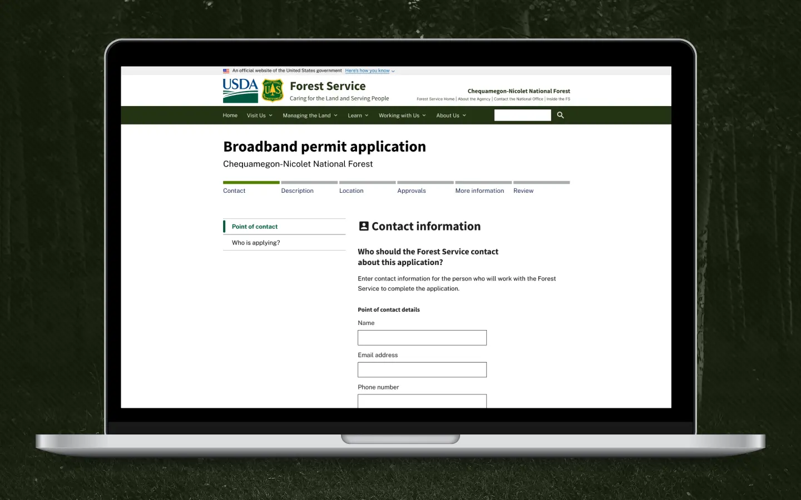
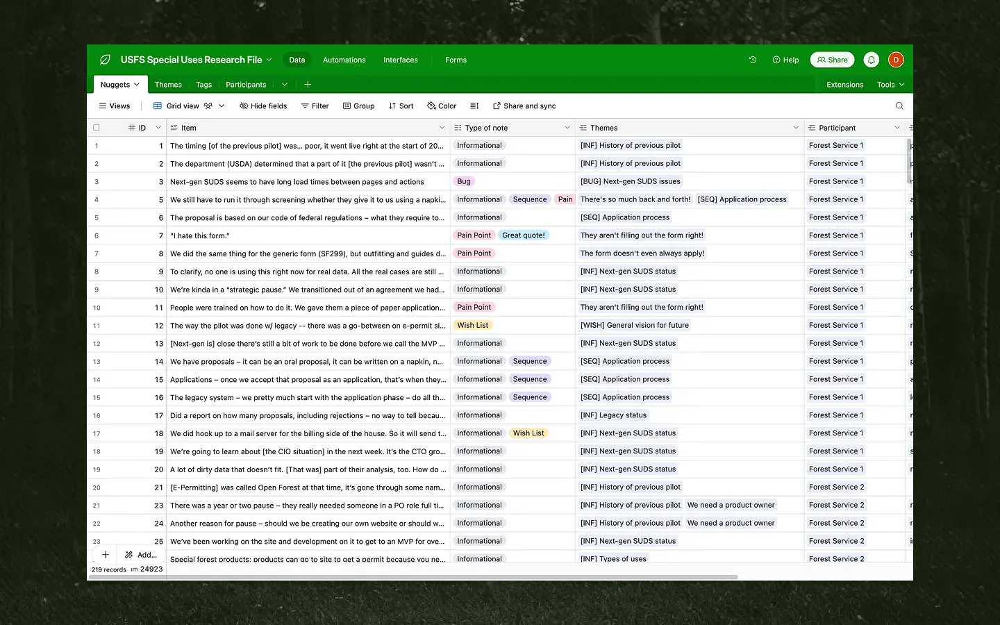
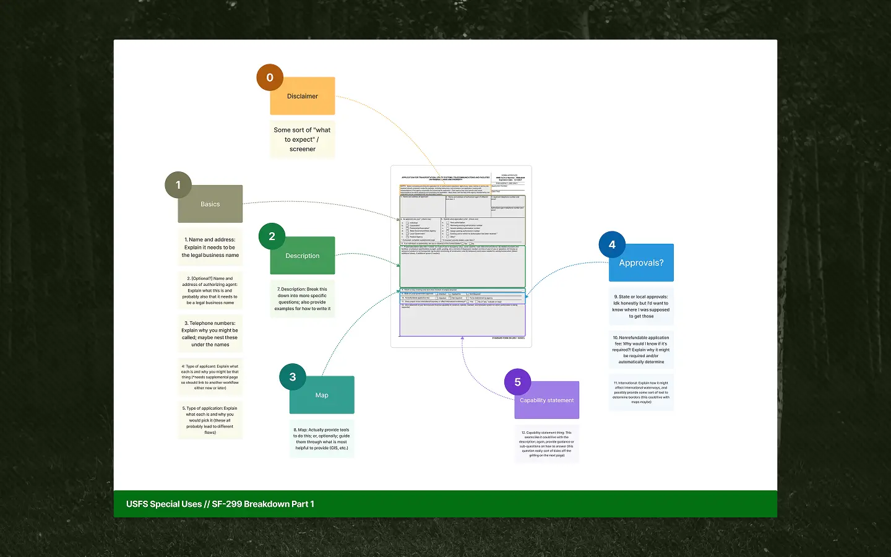
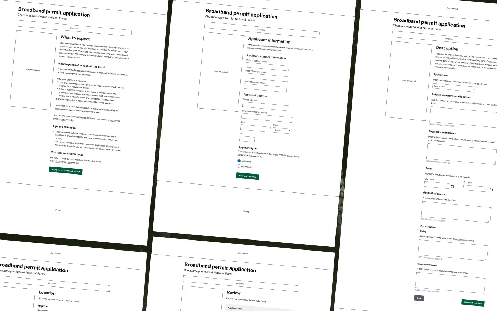
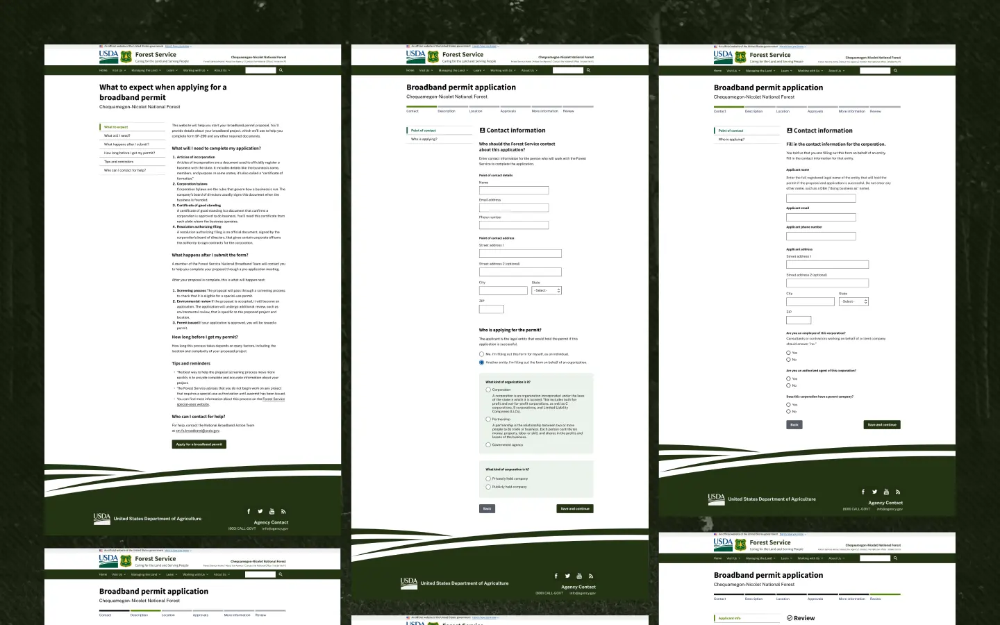

Supporting the responsible use of public lands through easier permits

It’s hard to get Special Use Permits from the Forest Service.
The U.S. Forest Service issues “special use” permits to ensure the safe and responsible use of public lands. But, permit seekers often find themselves frustrated. Rules aren’t the same between forests, the process is often arduous, and people get rejections for unknown reasons. This leads to people giving up on the process, which can have disastrous consequences for safety and the natural environment.
I led the UX research and design for a new permitting website.
I led the user experience research and design on a prototype for online Special Use permitting, including:
Recruiting and interviewing 27 participants from three main audiences: Forest Service, recreation permit applicants, and industry applicants
Leading our partner through encoding and synthesizing our qualitative data into actionable insights
Using those insights to create wireframes and designs
Coaching our partners through UX and product strategy
Contributing my front-end skillset to a live prototype
Summary
Partner
U.S. Forest Service
My role
UX Research + Design Lead
My contribution
UX research
UX strategy
Interface design
Front-end development
Impact
Proof-of-concept demonstrating an improved permitting experience
Partner secured next phase of funding and hired a full-time product owner

I maintained a comprehensive research repository in Airtable. I wanted to make sure our decisions could be traced back to what we heard from our participants and partners. I tagged every note with a type, related themes, and additional commentary.

One of the first design activities I did was taking a look at Standard Form 299 (SF-299) and deconstructing it a bit. This was a form we had heard all about during our research, and was really the core of the proposal and application process. Nothing on the form is particularly clear and it asks you to write a ton of open-ended prose. It was no surprise that a ton of permit seekers were getting it “wrong” so often. I went through it section by section and figured out how we might split it up into more manageable chunks.

I collaborated heavily with our content designer, Alia Salim, as we moved into prototyping. She worked primarily on the content side, rewriting specific questions, while I focused on the overall form layouts.
We shipped a small, online permitting prototype.
My team built proof of concept with a deliberately tight scope. We demonstrated an improved experience for applying for a permit while still complying with Forest Service’s required intake regulations.
With our prototype in hand, our partners were able to get more funding, hire a full-time product owner, and move on to the next phase of work.

As we iterated, I moved into higher fidelity designs that matched Forest Service's existing design language. But eventually we got to a point where we it made more sense to design and build directly in code. My colleague, Neil Martinsen-Burell set up a very basic “hello world” site on cloud.gov and we collaborated to bring the prototype to life.